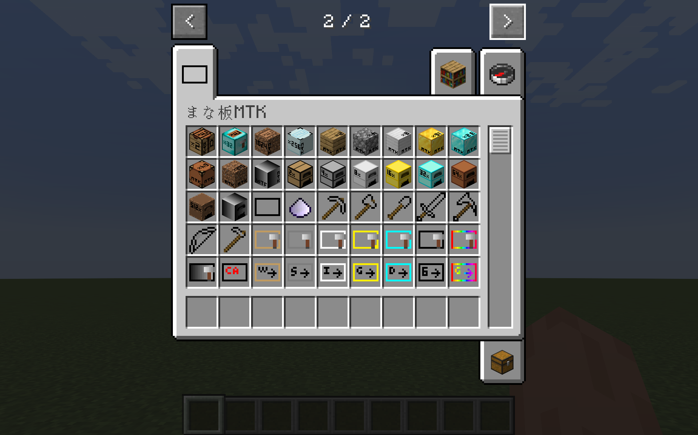
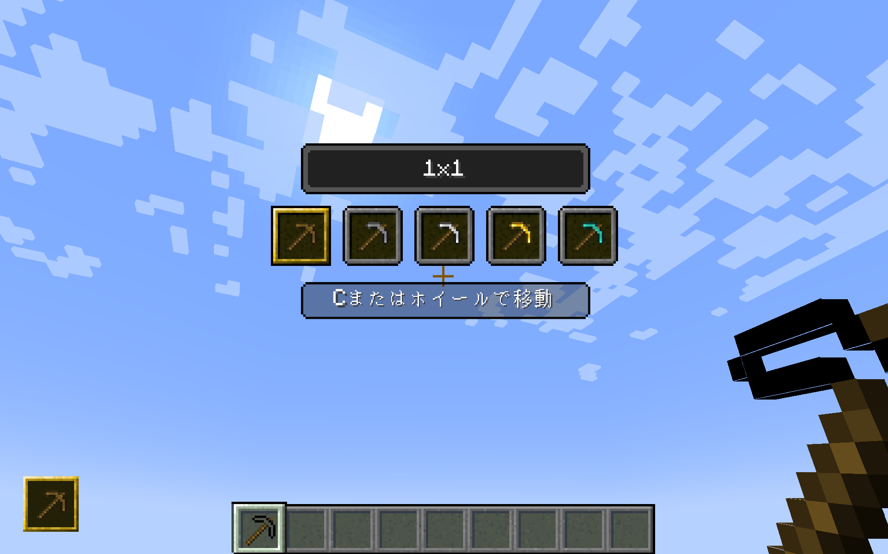
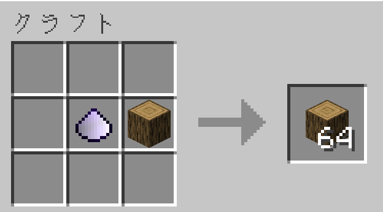
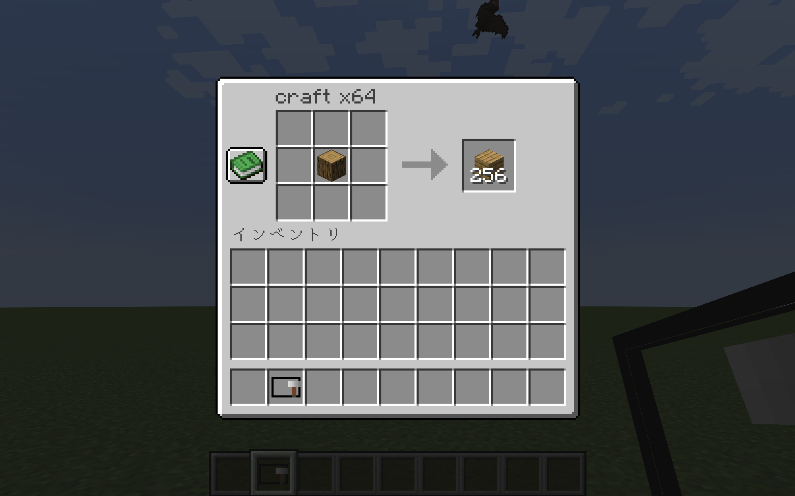
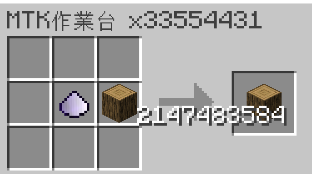
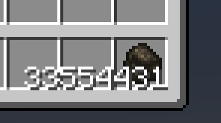
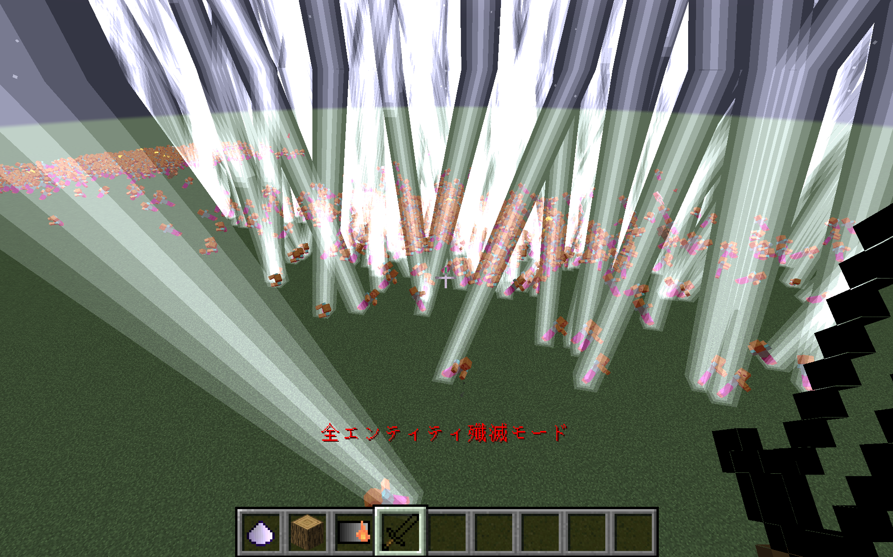

まな板ブロック
手に持ったアイテムを増やす基本設備。可変式では倍率を切り替えられます。
MINECRAFT FORGE 1.20.1
飛べる装備、広範囲採掘、桁違いの増殖設備。ゲームバランスごと楽しむ、パワフルなまな板MODです。

装備とツールは強いだけでなく、専用GUIやキー操作で使い方を切り替えられます。

作業台や設備、収納までまとめて便利に。段階的にスケールが上がります。
手に持ったアイテムを増やす基本設備。可変式では倍率を切り替えられます。
素材の段階に応じて倍率が上がるクラフト・精錬設備。
大容量チェストと、その手持ち版バックパックでアイテム管理まで支えます。




この1画面は、ゲームバランスを壊すための発射台です。ボタンを押すたび倍率表示と画面の圧が上がります。

まだバニラの面影があります。
添付の開発記録から、見た目の派手さを支えるBlockEntity、Capability、通信、保存の試行錯誤を抜き出しました。
3×3スロット、レシピ判定、NBT保存、チェスト間搬送を接続。GUIを閉じても材料が消えない状態管理に挑戦。
ContainerとIItemHandlerの違いを理解し、ホッパー連携や大量アイテムの内部表現を検討。
ItemStackごとに精錬状態を持たせ、燃料・進行時間・生成倍率をCapabilityで管理。
AbstractCapability、IDataAttachment、IHasSelfTypeを設計し、保存とイベント処理の重複を整理。
DEVELOPMENT CONSOLE / 小ネタ
Slot 1024 not in valid range - [0,1024)
大量インベントリでは、内部データとGUI上の見せ方を分ける必要がありました。
Minecraft 1.20.1、Forge、クライアントとサーバーの両方に対応。便利機能を作る過程そのものが、MOD開発を学んだ記録になっています。